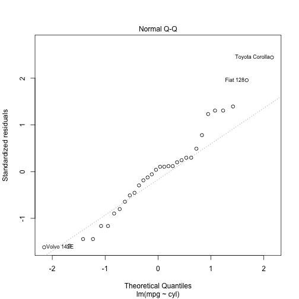
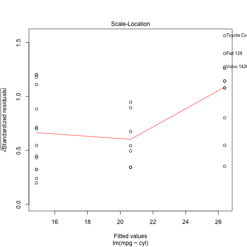
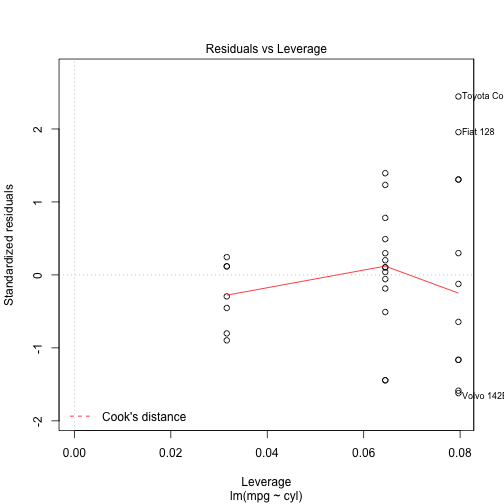
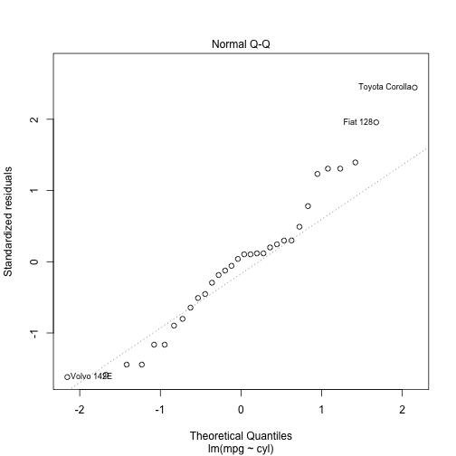
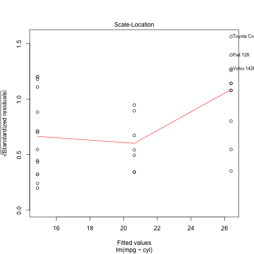
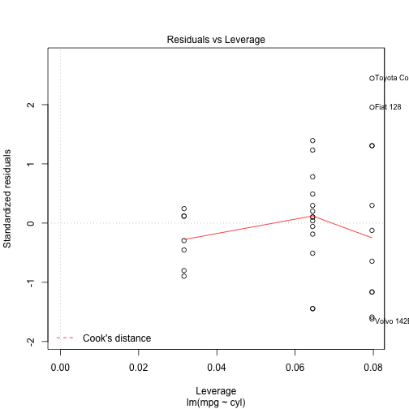

The Shiny App uses the mtcars dataset and allows user to select a variable to run a liner regression model.
To run the app:
Select the varible you want to run regression for from
- Number of cylinders
- Transmission
- Gears
- Carburetors
Click Submit
M. Chitnis
Developing Data Products course project
The Shiny App uses the mtcars dataset and allows user to select a variable to run a liner regression model.
To run the app:
Select the varible you want to run regression for from
Click Submit
Motor Trend Car Road Tests : The data was extracted from the 1974 Motor Trend US magazine and comprises fuel consumption and 10 aspects of automobile design and performance for 32 automobiles (1973–74 models).
A data frame with 32 observations on 11 variables
mpg: Miles/(US) gallon, cyl: Number of cylinders, disp: Displacement (cu.in.), hp: Gross horsepower, drat: Rear axle ratio, wt: Weight (lb/1000), qsec: 1/4 mile time, vs: V/S, am: Transmission (0 = automatic, 1 = manual), gear: Number of forward gears, carb: Number of carburetors
Source: Henderson and Velleman (1981), Building multiple regression models interactively. Biometrics, 37, 391–411.
l <- lm(mpg~cyl, data=mtcars)
summary(l)
##
## Call:
## lm(formula = mpg ~ cyl, data = mtcars)
##
## Residuals:
## Min 1Q Median 3Q Max
## -4.9814 -2.1185 0.2217 1.0717 7.5186
##
## Coefficients:
## Estimate Std. Error t value Pr(>|t|)
## (Intercept) 37.8846 2.0738 18.27 < 2e-16 ***
## cyl -2.8758 0.3224 -8.92 6.11e-10 ***
## ---
## Signif. codes: 0 '***' 0.001 '**' 0.01 '*' 0.05 '.' 0.1 ' ' 1
##
## Residual standard error: 3.206 on 30 degrees of freedom
## Multiple R-squared: 0.7262, Adjusted R-squared: 0.7171
## F-statistic: 79.56 on 1 and 30 DF, p-value: 6.113e-10
plot(l)
   
  